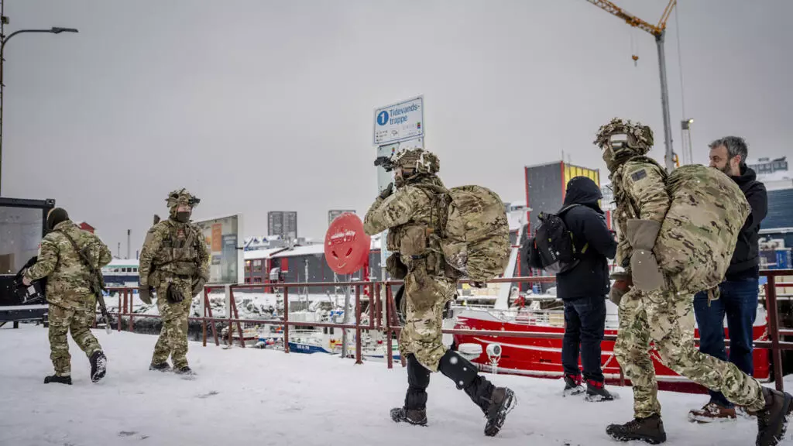

Breaking News
 Jan 22
Jan 22
by Olivia Bennett
Greenland Prime Minister Warns of Military Risks as Trump Pushes for Arctic Control
Greenland’s Prime Minister warns citizens to prepare for potential U.S. military action as President Trump intensifies efforts to control the Arctic island
Greenland Prime Minister Jens-Frederik Nielsen said late Tuesday that the island and its people should be prepared for "everything," including military action from the United States as President Donald Trump steps up his efforts to seize control of the semi-autonomous Arctic island, which is part of Denmark. Speaking at a news conference, Nielsen stated that, while the scenario was unlikely, Greenland needed to be prepared because "the other side" had not ruled out the use of military action, an apparent allusion to the US. “It is not likely that there will be a use of military force, but it has not been ruled out yet. This leader from the other side has made it very clear that it is not ruled out. And therefore, we must of course be prepared for everything,” he stated, according to a Google translation of his remarks. Nielsen stated that the Greenland government was developing an awareness campaign for its citizens, including instructions on what individuals may do, such as storing at least five days' worth of food in their houses. Greenland will also construct an emergency response team made up of municipal and police departments, as well as Denmark's Joint Arctic Command. “We must emphasize that we are in a difficult, a difficult time, a stressful time, and we cannot rule out that it can escalate even [to something] worse,” according to Nielsen. Denmark's armed forces released footage of European and Danish military exercises in Greenland on Tuesday, claiming that it was "strengthening its presence in Greenland and the North Atlantic." “The increased presence in Greenland is a consequence of the changed security policy situation, which places new demands on the defense of the Arctic and the North Atlantic by Denmark and NATO,” according to the military. The United States is a member of the North Atlantic Treaty Organization.
Why This News Matters:
The rising tensions over Greenland are important because they show how the U.S. and its European allies don't get along. Many people are worried about President Trump's plan to take over Greenland. Threats of military action and economic punishment have only made things worse. Jens-Frederik Nielsen, the Prime Minister of Greenland, said that people should be ready for "everything," even the military. This is proof of how bad things are. Trump's threats of tariffs on European countries and demands have made it very unclear what will happen to NATO's unity and the relationship between the U.S. and Europe in the future. In the next few days, it will be very important to see if a diplomatic solution can be found or if the problem will get worse. If it does, NATO could be in danger and the Arctic's political landscape could change.
Trump's Assertive Push for Greenland Control
On Tuesday, Trump refused to outline the steps he would take to achieve his goal of taking over Greenland. "You'll find out," Trump replied when asked how far he would go to seize the Arctic island. Trump has minimized the possibility of opposition from European leaders if he takes over the island. "I don't think they're going to push back too much," he stated on Tuesday in Florida. “We have to have it ...They can’t protect it.” On Saturday, Trump threatened eight European countries with increased tariffs, beginning at 10% on February 1 and up to 25% on June 1, if a deal to allow the US to acquire Greenland was not achieved. European states are considering retaliation tariffs and other economic actions against the United States. A Danish politician told President Donald Trump to "f--- off" during a recent heated debate in the European Parliament about Greenland's future. Anders Vistisen, a member of the European Parliament, delivered the criticism during a session centered on the United States' interest in Greenland and Trump's efforts to buy the Arctic country. The outburst occurred as Trump continued to floated the concept of putting Greenland under American authority in order to buttress what he claims is a national and global security requirement. Addressing the European Union's legislative body, Vistisen, 38, squarely tackled Trump's long-held interest. Vistisen stated that Greenland was not for sale before escalating his statements in language that breached parliamentary rules. "Let me put this in words you might understand: Mr. President, f--- off," Vistisen continued, eliciting emotions from the chamber. Parliament Vice President Nicolae Ștefănuță soon intervened, admonishing the politician for their words and warned of consequences. Following the punishment, Vistisen concluded the rest of his statements in Danish before departing the podium.
Diplomatic Tensions and Possible U.S. Retaliation
After days of threatening US partners over Greenland, President Donald Trump arrives in Davos with an urgent diplomatic intervention planned. Top European officials intend to use this week's annual summit of global elites as a staging ground for averting a rapidly approaching crisis that has put the continent on edge — and may now jeopardize the survival of its seven-decade alliance with the United States, according to three people familiar with the discussions. Trump aides and Western diplomats have concentrated on expanding existing accords that allow the US to locate military bases and other resources on the island, as well as establishing commercial and economic arrangements. According to those familiar with the situation, such a result would entail some sort of signing ceremony that would allow the president to highlight an accomplishment. Another alternative that has been proposed is putting Greenland under a Compact of Free Association, which would allow it to preserve its current status while also giving the US enhanced security access in exchange for financial aid.
There have also been early conversations of renegotiating the 1951 agreement between the United States, Denmark, and Greenland to make it plain that no Chinese investments will be made in Greenland. Trump, who lands in Davos early Wednesday, told reporters before leaving Tuesday that he plans to attend a series of meetings on Greenland while there, promising an agreement that is "very good for everybody." He stated NATO would be "very happy" and Greenlanders, who had rejected fears of American annexation, would be "thrilled."
NATO's Concern and European Response to Trump's Greenland Demands
NATO Secretary General Mark Rutte, who has attempted to build a personal relationship with Trump, is among those slated to meet with him one-on-one on the sidelines of the summit, according to individuals familiar with the planning. Despite his optimistic estimates, Trump has continued to press his controversial demands, saying on Tuesday that "we need" Greenland. When asked how far he was willing to go to obtain control of the Arctic island, Trump simply answered, "You'll find out," before hinting that if the US Supreme Court finds against his tariffs, he may consider other options. In a statement, White House spokesperson Anna Kelly portrayed the US acquisition of Greenland as a potential boon for NATO, arguing that it "becomes far more formidable and effective with Greenland in the hands of the United States, and Greenlanders would be better served if protected by the United States from modern threats in the Arctic region." However, there is still no clear consensus among the United States' closest European allies on how to respond if the president's aggression escalates. Ursula von der Leyen, President of the European Commission, used her talk at the World Economic Forum to urge for "a new form of European independence." "Threatening to impose economic sanctions means it has moved beyond an abstract issue and a diplomatic crisis into a real economic and political crisis," said Erik Brattberg, a non-resident senior fellow at the Atlantic Council's Europe Centre.
Summary of Ongoing Diplomatic Tensions
The standoff that will take place over the next 48 hours highlights the gravity with which European nations are now seeing Trump's imperial threats, as well as his repeated attacks on various world leaders. Tensions over Greenland have also led some in Europe to reconsider their strategy after a year in which most US allies sought to satisfy Trump rather than resist him, arguing that it was often better to obey his orders than risk direct conflict. Trump has long contended that Greenland is essential to US national security and valued because of its massive mineral riches. But that push reached a new high over the previous week, with his promise to levy taxes on eight European countries, as well as his subsequent public statements criticizing the leaders of Norway and France. The president's proposal to penalize allies economically has sparked concern throughout Europe, with officials warning that such a move may undermine the long-standing NATO alliance, which includes 32 member states from Europe and North America

Olivia Bennett is a U.S. political correspondent reporting on federal policy, election developments, and national governance issues.